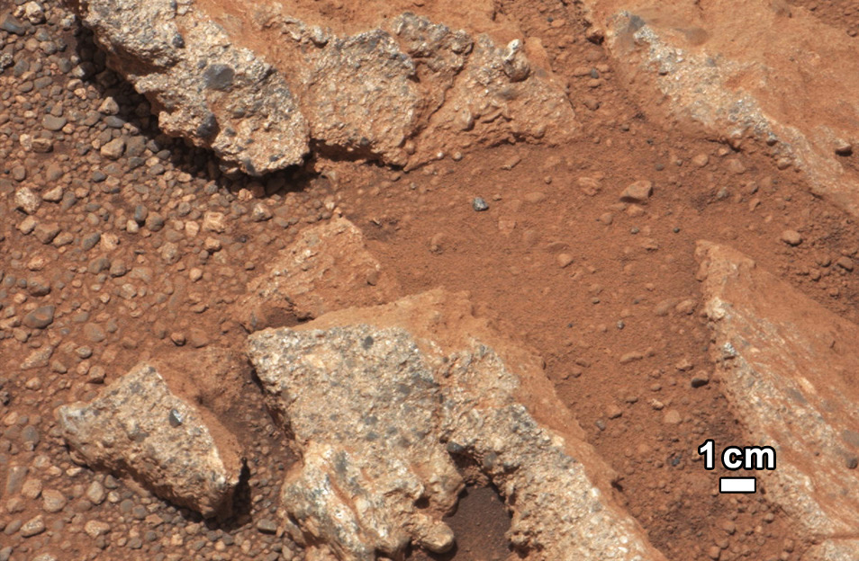
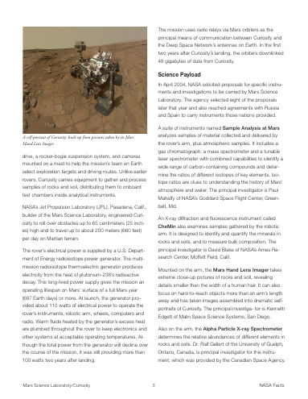
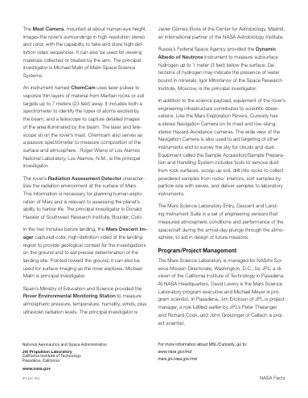

Put a PDF here
Open a document to read its pages and ask about what you find.

Source passage p.02
The evidence for stream flow was in rounded pebbles mixed with hardened sand in conglomerate rocks at and near the landing site.
Open a PDF to begin
Drop a PDF or choose one to begin
Put a PDF here

 01
01 02
02
03
04